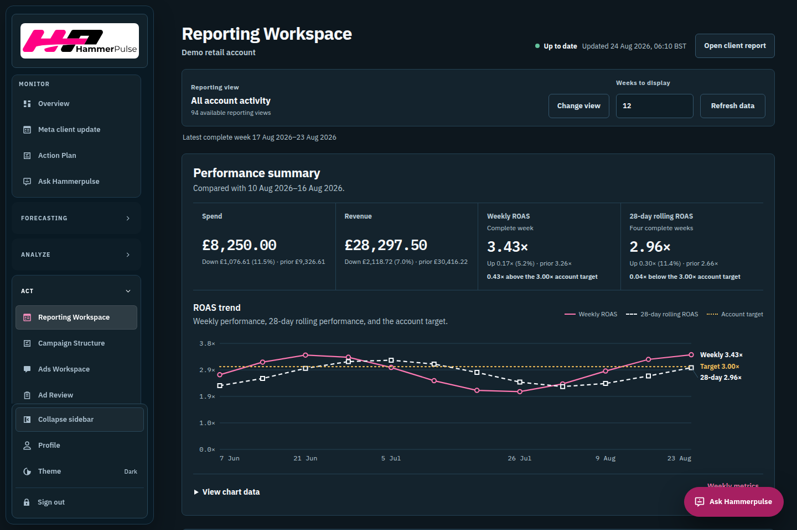
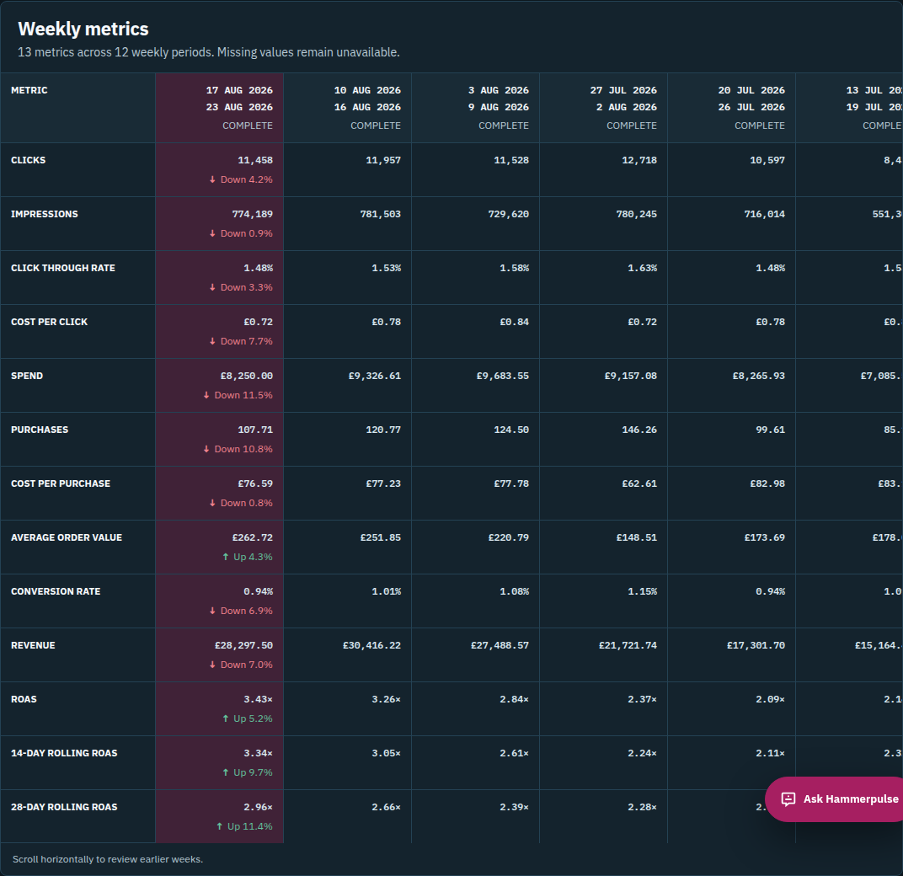

Problem
Room occupancy alone does not explain how a classroom is being used. ClassVision detects visible activity context while avoiding identity records.
Ten projects. The problems I worked through, the choices I made, and the details that mattered.
Select a project to read its story.
A privacy-conscious classroom activity-context framework for smart academic environments. The project uses YOWOv2 to classify visible person-level activity into studying, idle, collaborative, and arriving/leaving classes.
Room occupancy alone does not explain how a classroom is being used. ClassVision detects visible activity context while avoiding identity records.
The framework avoids face recognition, identity matching, biometric profiling, and disciplinary automation. It reports activity context and room-level summaries.
A capture-the-flag platform built as a multi-service system with Next.js, Laravel, FastAPI, PostgreSQL, Redis, and Docker Compose.
CTF events need accounts, teams, challenges, scoring, and admin control in one deployable platform that another developer can run locally.
A secure academic scheduling system with student, faculty, DRC, college admin, and global admin flows.
A gym operations system with an intelligent local face-recognition attendance path.
A business kiosk/POS app for customer ordering and staff operations.
A Laravel/Vue service-ticket system for university offices and student service requests.
A Meta advertising analytics platform I built end to end, connecting data ingestion, account-scoped reporting, creative review, and client-facing reports.
Advertising teams need to review performance without reconciling different metric definitions, incomplete periods, and disconnected exports. Internal and client reports need to tell the same story.
Sole developer, responsible for the frontend, backend, data pipeline, account access, assistant, testing, and containerized runtime.
The read-only assistant answers account questions using permitted warehouse data and approved context. Answers identify their sources; the assistant does not modify advertising campaigns.
The project includes Node tests, Playwright behavior and visual checks, accessibility checks, and reporting parity validation. Screenshots here use demonstration values and do not claim client results.


This workspace organizes approved security research into written scope, test notes, evidence, safe PoC boundaries, reports, remediation guidance, and retest notes.
Security work is framed around written authorization, approved targets, non-destructive testing, and remediation handoff.
Python examples for Genetic Algorithms, Markov Decision Processes, and Particle Swarm Optimization, with classroom descriptions and runnable standard-library scripts.
Explore OptimizationASP.NET Core 7 API lab with controllers, DTOs, EF Core migrations, SQLite persistence, and Swagger/OpenAPI support.
Explore Student REST API